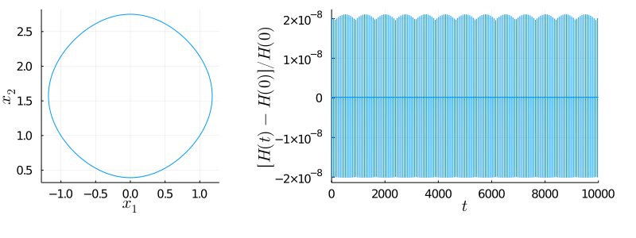
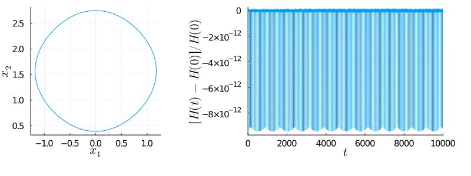
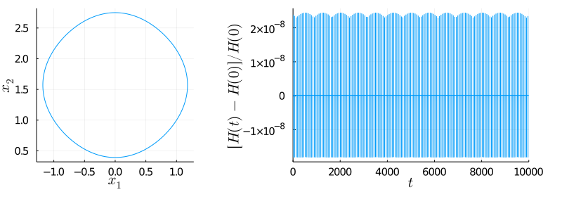
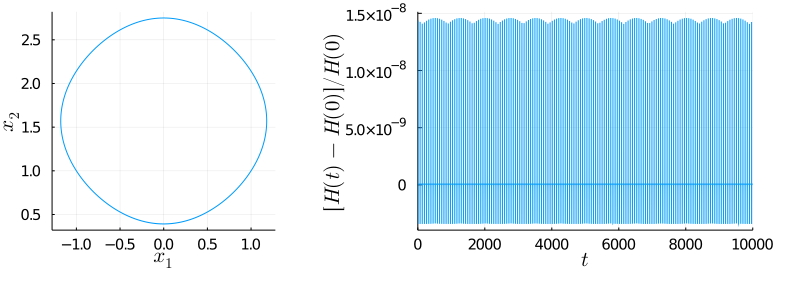
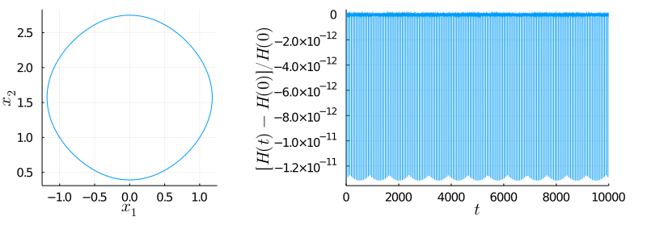

Massless Charged Particle with SPARK Integrators
Internal Projection • Definition 1
GLRK(1)pInternal
Plots • Symplecticity • Tableau: TableauVSPARKInternalProjection

GLRK(2)pInternal
Plots • Symplecticity • Tableau: TableauVSPARKInternalProjection

GLRK(3)pInternal
Plots • Symplecticity • Tableau: TableauVSPARKInternalProjection
GLRK(4)pInternal
Plots • Symplecticity • Tableau: TableauVSPARKInternalProjection

Internal Projection • Definition 2
GLRK(1)pModifiedInternal
Plots • Symplecticity • Tableau: TableauVSPARKModifiedInternalProjection
GLRK(2)pModifiedInternal
Plots • Symplecticity • Tableau: TableauVSPARKModifiedInternalProjection

GLRK(3)pModifiedInternal
Plots • Symplecticity • Tableau: TableauVSPARKModifiedInternalProjection

GLRK(4)pModifiedInternal
Plots • Symplecticity • Tableau: TableauVSPARKModifiedInternalProjection
